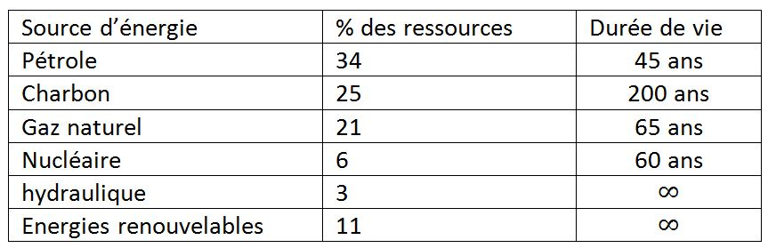

Disponibilité de l'Energie
Les énergies fossiles sont les principales énergies utilisées dans le monde quel que soit le pays.
La consommation n'a pas cessé d'augmenter : Elle a été multiplié par 10 entre 1900 et 2000

Pourtant, ces ressources sont limitées puisqu'elles sont constituées par des stocks fabriqués il y a plusieurs millions d'années.

Une politique d'économies d'énergie dans les pays industrialisés est nécessaire ainsi qu'une augmentation substantielle de production des énergies renouvelables.
Le GIEC (Groupe d'experts intergouvernemental sur l'évolution du climat) estime que 77% des besoins en énergie seront satisfait en 2050
grâce aux énergies renouvelables si les gouvernements s'en donne les moyens.
Passez au chapitre suivant : Les énergies de demain ici
Créé avec HelpNDoc Personal Edition: Sites web iPhone faciles